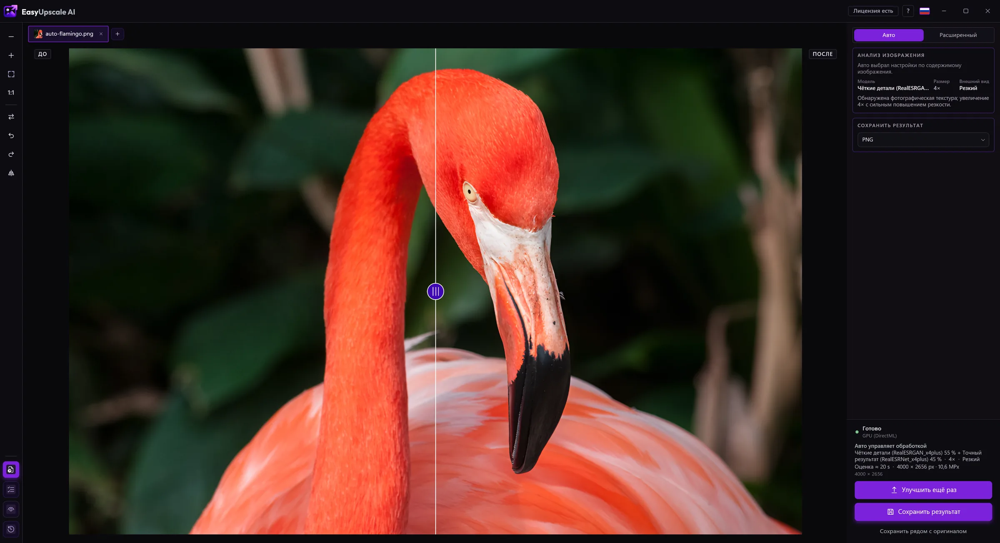

Увеличение фото без потери качества
Обычное увеличение в простой программе размывает фото, потому что просто растягивает существующие пиксели. EasyUpscale AI с помощью моделей ИИ дорисовывает правдоподобные детали, и увеличенное фото выглядит чётче.

Скачать бесплатно для Windows · Купить лицензию · 8,99 €
Как это сделать
- Откройте фото и оставьте режим Auto или в расширенном режиме (с лицензией) выберите размер: 2×, 4× или цель вроде 4K или Full HD.
- Запустите обработку. Она идёт на вашей видеокарте.
- Сравните с оригиналом ползунком и сохраните.
Честно
- Никакое увеличение не бывает по-настоящему «без потерь»: новые детали — это оценка модели. На обычных фото они выглядят естественно, но на очень маленьких или повреждённых исходниках модель может неверно угадать деталь.
- Увеличение в 2× бесплатно, без водяного знака. 4× требует лицензии (8,99 € единоразово).
- Размер результата ограничен памятью вашего компьютера; режим Auto никогда не планирует результат больше 40 мегапикселей.
Конфиденциальность
Всё считается на вашем компьютере. Фото никуда не загружаются.